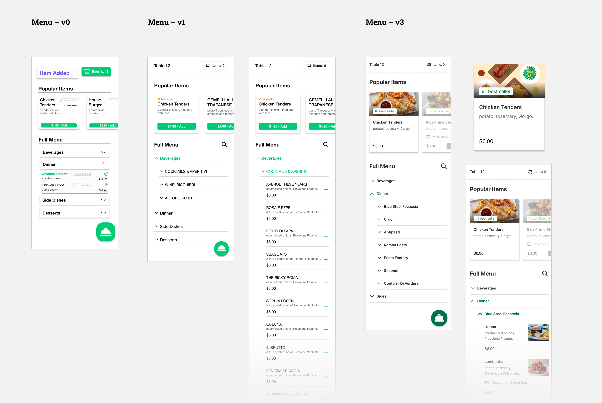

Chime
Period: 2020
Expertise: product design
Team: Quinn Favret (CEO), Eric Zhong (CTO), Julia Averbuch (CPO), Dominic Yee (CBO), Shih-Yu Chu (D Intern)
A Self-Served Ordering System for Dining In during Post COVID Era
Problem
As we enter the post COVID era, restaurants are coming back and people start to dine in again. Chime, a startup founded by UofM students, wants to provide a contactless solution for dining in safely. They want to build a system that doesn’t cost a great fortune for restaurants to pick up, and is easy for customers to use.
Outcome
When I joined the project, they already had a rough idea of how the system should work: a table tent with a QR code that users can scan to open the menu and place orders on their phone, and a dashboard where restaurants can manage orders. As their product design intern, I helped them build the entire system from scratch.

Consumer Side
Table Tent
Each table will have a table tent that has a QR code that users can scan to open the menu and place their orders on the phone


Feature I
Clean user interface for browsing menu

Feature II
Quickly find item with special diet request

Feature III
Send order in a way similar as delivery apps
Feature IV
Call a server and request the bill when needed
Restaurant Side

Live Order
On restaurant side, live orders from consumers will be displayed on the dashboard
Menu Management
An interface for restaurants to manage their menus. Provide “modifier” features for easier management

Operation Management
Including Table Tent Settings, Employees Settings (invite members), and Account Settings
Consumer
Side:
Research
User Interview
Competitive Analysis
Menu Structure
User Interview:
Having a Clear Navigation and Helping Users Explore the Unfamiliar Menu is Crucial
I conducted 4 interviews, asking people what they care most about while using a self ordering system in a restaurant. There’s no surprise that the ease of navigation is the most crucial aspect. Besides, since Chime should play the role of waiters, helping users to explore the menu that they aren’t familiar with.
It has to be easy to navigate and see as much info as possible at the first glance
Dining in restaurants is different from using a kiosk at chain restaurants, where you normally know what to order. At restaurants, waiters can be helpful in explaining the menu and items that I’m not familiar with
Competitive Analysis:
DoorDash’s Menu Structure and Interaction Pattern is a Good Reference for Chime
I looked into about 10 (indirect) competitors to figure out what the UI should look like. I decided to make Chime’s menu structure similar to DoorDash, in which users can see all categories at first glance, and can go 1 layer deeper by clicking them. Normally the menus for dining in can be long and complex, and this structure can prevent the page being too long and becoming hard to navigate. For the interaction pattern of adding and sending orders, I decided to follow the similar pattern of what DoorDash and UberEats have, which is the paradigm that probably everyone is familiar with.

The Three Layers Menu Structure
Again, the menu for dining in is usually much more complicated than the one you can see on major food delivery apps. They are simpler because they are for take out or delivery. But still, we have to simplify the structure, otherwise it will be hard to use on mobile. Our solution is to keep the structure in three layers: menu > categories > items, which is presumably being able to balance the complexity and the usability of the menu.

Consumer
Side:
Design
Onboarding
Menu
Search
Order Food
Send Order
Call a Server
Interaction Map
Onboarding:
Two Steps Onboarding that Help Users Focus on One Thing at a Time
For the onboarding, we wanted to convey two major messages: use the app to order food, and call a server whenever they need. Our first version simply put both messages in one page. In the iteration, I separated them into two steps to (kinda) force users to read the info (and perhaps more easily). Finally, I adjusted the interaction a little to match the common pattern of onboarding design.
Menu:
Adding Additional Information that Helps Users Explore Items, e.g. Tags and Pictures
The menu consisted of two parts: Popular Items and Full Menu. In the first iteration, I simply overhauled the UI that the team originally designed. In the user testing, some users mentioned that the plain text of item name and description is a little hard for them to decide what they want. Therefore in the next iteration, I added “tags” to label the food type in terms of diet restriction, as well as “pictures” which is a better way for users to understand the item. I also created some illustrations for the case when “popular” items don’t have a picture. In addition, I also added the “search” function, which enables users to explore more easily when the waiter is not present. See more detail in the next section.
Search:
Keyword Search + Diet Restriction Filter (Tags)
In the first iteration, the search is very simple, type in a keyword, and it will show the results. But since we added “tag” to our items, I also added the tag filter in search, so users can find the items of specific categories more easily, such as vegan.
Order Food:
Iteration on Item Page’s Usability and Cart Page’s Accessibility
The user flow of ordering food is straightforward and similar to industry leading delivery apps. In the interaction, I focused on the design of “Item Page” and “Cart” page. On the cart page, I increased the visibility of item “number”, which was being complained about during user testing. For the “Item Page”, I explored the layout of the “Add to Cart” button and the position of “Price”.
Send Order:
Incorporating a Phone Tracking System
At first, the flow was simply clicking the “Send Order” button, and then it will show that the restaurant has received the order. However, as we moved forward, we figured that there might be an issue of people abusing the system, e.g. ordering food for other tables, or even outside of the store. In addition, we want to have a feature to track who has been at the restaurant for COVID tracing, so we asked users to verify their phone number before they can place the order.

Call a Server
The design of this is pretty straightforward – click on the service you want, and a server will come. If users click “Get the Bill”, a server will bring the bill to the table, meanwhile the system will prompt users to rate their experience.
Interaction Map
I created an interaction map for the developers to reference to.
Restaurant
Side:
Research
User Interview
Competitive analysis
User Interview:
Servers Are in Charge of Different Areas, and They Have to Pay Attention to Diner’s Special Requirements
In the interviews, I asked the interviewees to walk me through their process of taking orders. There were two main needs discovered from the interviews that are specifically related to the restaurant side dashboard design:
Usually different servers will be in charge of different areas, which means that the dashboard should allow users to focus on certain areas/tables
Servers will need to punch specific diet striction into POS, meaning that the interface should present those information clearly
Competitive analysis:
Employ UberEats’ Concept of “Modifier” to Menu Management
Regarding menu management, there was no insight that I could distill from the interview so I decided to look into how similar platforms do. I found a Uber Engineering website which shows how the industry leading companies design their menu management page. One major takeaway was the concept of “Modifiers”, which is a component-like option set that can be applied to multiple items.

Source: Uber Engineering
Restaurant
Side:
Design
Live Order
Menu Management
Operation Management
Live Order:
Making Information and Interaction More Understandable
The live order is where servers can see the incoming orders, which will be highlighted and have a red time code to remind servers. Once a server punches the order into their POS system, they can click “Resolve” to change the status of the order. The users testing suggested that several information displayed here was not clear enough. Therefore, in the iteration I adjusted the order display style for better readability, modified time code colors to attract more attention, and changed the wording of the “Complete” button to “Resolved”, and the “Table filter” button to “Show all tables” for better understanding.

Menu Management:
From Basic Info Editing to Advanced Features Like Modifiers
There are three tiers in menu management: All menu list > Inside a Menu > Items. For the “Inside a Menu” page, I changed the list style due to the development concern (reuse UI from consumer side). Regarding the interaction of editing/adding items, the first version only supported basic info editing. In the final version, we added more features which we found would be helpful, such as tags, modifiers.
For the modifiers, it was designed as a separate tab from the menu, where users can create or update the modifiers without messing around with the menu itself.

Operation Management:
Settings of Account, Employees, and Table Tent
This includes managing employee, account settings, and table tent settings. In addition, for cases when a server works at multiple restaurants who are using Chime, they can login with different accounts. For the table tent settings, users can add or remove a table from the list, and can click on the table number to print a table tent with that number.

Table Tent
Initial Design and Iteration
For Multiple Brands
Initial Design and Iteration
First I designed the table tent with our brand name (it’s called Basil at the beginning), and iterated on content, layout, and style. Next I embedded restaurants’ logos as several of them expressed their interest in having their own brand on it.

For Multiple Brands
Since we wanted to design the table tent that can be generated and printed from the client's dashboard, I re-evaluated the design to see how this layout can accommodate different styles from various brands. I ended up having three themes, black, white, anc colored background. Restaurants can also choose their own colors as the main colors for headings.
Design
System
Main Color and Logo
Design system
Main Color and Logo
The original color the team chose was a very bright green. As we are using this green throughout the entire system, and with some place having text over it, I suggested they tune the color to a darker green, which passes the color contrast checker in all conditions. In addition, one of the front-end developers volunteered to modify the shape of the logo, so it became rounded and cute!
Design System
Throughout the design process, I gradually built a simplified design system. At the end I also helped the team to build the “Assets” system (i.e. component library) for them for future use.
Outcome
Developing and Launching
Performance
Developing and Launching the Product in Two Restaurants
Our team ended up developing most of the features discussed above, except for some complex ones like the “modifiers” menu management and the “search with tags” feature on the consumer side. We implemented the system in two local restaurants in Ann Arbor.
Performance: What Data Said about Chime?
Our data shows that consumers are willing to try using Chime. Good news! Surprisingly, people mainly use Chime for ordering beverages (mostly alcohol). This interesting data can help Chime adjust its business model and the design strategy, e.g. focus on beverages.
If There Was
More time
Additional Insights
Consumer Side
Restaurant Side
Additional Insights from Interviews and User Testings
In previous sections, I only focused on and talked about the most critical insights from interviews and user testings that will directly affect the design of our system. However, some additional insights show that some design could be added, or could be done differently, if there was more time for us to conduct research, design, and overcome the technical constraints.
Consumer Side
More research on phone verification: some users suggest that privacy is important, and giving their phone number would be something that concerns them
Send order based on “seats”, split bill, and even pay in app: this interaction would be more like the realistic scenario of dining in. Some users specifically mentioned these feature during the testing
Review past order: like most food ordering system, allowing users to review the order they placed is crucial
Restaurant Side
“Live Order” should be based on table numbers: currently the orders are displayed in a list. it’d more intuitive if the dashboard show a map of the restaurant, and the order would pop up based on the map and actual location of the table
Designing a mobile app for servers to use: if we have an app version of the restaurant dashboard, servers can be better notified and have access to the orders from consumers
The “right fly out modal” for menu editing should be in full page: the component and interaction inside the modal is complex. It was designed as is due to the consistency concern, but it should be displayed in a full page for better accessibility
Beyond
Chime
The Underlying Pain Points
Consumer Side
Server Side
Restaurant Side
The Underlying Pain Points
So far I’ve been only discussing the insights that are directly related to what Chime wants to do. However, in the interviews and user testing, I also asked more general questions about the dining experience and restaurant management. Below are some crucial pain points that Chime might not be able to solve at the moment, but should definitely consider for their business and design strategy in the future.
Consumer Side:
The Dilemma Between Contactless and Nice Dining In Experience
Our research suggested that most consumers care about the experience of talking to a server, which is an essential part of the holistic dining experience. The contactless solution should not only be simply as a “self ordering system”. An alternative way to think of it is that, it should be contactless but in the meantime, also maintain or even augment the service and experience the restaurant can provide.
Server Side:
Not Everyone is Happy about Chime
On the other hand, as we rolled out the product in the restaurants, the servers seemed to not feel so excited about this system. There could be two possible reasons. First, it was an extra effort for them to adapt and learn how to use or teach customers how to use the app. Second, less contact could mean less tips for them. If Chime is going to be a contactless solution that coexists with servers, this should be addressed.
Restaurant Side:
The Cost of Adopting the Chime System
Besides the cost of servers learning the system mentioned above, the other major pain point for restaurant owners is that they already have plenty of digital systems, among which the POS system is the most crucial one. Several owners said that if there's no way to integrate Chime with their POS system, it’s going to be hard for them to use it. In addition, uploading and managing the menu on Chime’s system can also be a daunting task. Currently, because Chime it’s still in its beta version (kinda), the team helps restaurants manually add and manage their menu. But this has to be automatic and scalable as Chime keeps growing. Right now there’s not a clear solution for that (at least not with the technologies the team has).